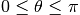
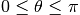

core¶
Core objects
test |
Run tests for module using nose. |
Module: core.geometry¶
Utility functions for algebra etc
cart2sphere(x, y, z) |
Return angles for Cartesian 3D coordinates x, y, and z |
cart_distance(pts1, pts2) |
Cartesian distance between pts1 and pts2 |
circumradius(a, b, c) |
a, b and c are 3-dimensional vectors which are the vertices of a |
compose_matrix([scale, shear, angles, ...]) |
Return 4x4 transformation matrix from sequence of transformations. |
compose_transformations |
|
decompose_matrix(matrix) |
Return sequence of transformations from transformation matrix. |
dist_to_corner |
|
euler_matrix(ai, aj, ak[, axes]) |
Return homogeneous rotation matrix from Euler angles and axis sequence. |
lambert_equal_area_projection_cart(x, y, z) |
Lambert Equal Area Projection from cartesian vector to plane |
lambert_equal_area_projection_polar(theta, phi) |
Lambert Equal Area Projection from polar sphere to plane |
nearest_pos_semi_def(B) |
Least squares positive semi-definite tensor estimation |
normalized_vector(vec) |
Return vector divided by its Euclidean (L2) norm |
perpendicular_directions |
|
rodrigues_axis_rotation |
|
sph2latlon |
|
sphere2cart(r, theta, phi) |
Spherical to Cartesian coordinates |
sphere_distance(pts1, pts2[, radius, ...]) |
Distance across sphere surface between pts1 and pts2 |
vec2vec_rotmat |
|
vector_cosine(vecs1, vecs2) |
Cosine of angle between two (sets of) vectors |
vector_norm(data[, axis, out]) |
Return length, i.e. |
Module: core.gradients¶
GradientTable |
|
auto_attr |
|
gradient_table |
|
gradient_table_from_bvals_bvecs |
|
inv |
|
polar |
|
reorient_bvecs |
|
vector_norm |
Module: core.ndindex¶
as_strided(x[, shape, strides, subok]) |
Make an ndarray from the given array with the given shape and strides. |
ndindex(shape) |
An N-dimensional iterator object to index arrays. |
Module: core.onetime¶
Descriptor support for NIPY.
Utilities to support special Python descriptors ([R3], [R4]), in particular the use of a useful pattern for properties we call ‘one time properties’. These are object attributes which are declared as properties, but become regular attributes once they’ve been read the first time. They can thus be evaluated later in the object’s life cycle, but once evaluated they become normal, static attributes with no function call overhead on access or any other constraints.
References¶
| [R3] | How-To Guide for Descriptors, Raymond |
Hettinger. http://users.rcn.com/python/download/Descriptor.htm
| [R4] | Python data model, http://docs.python.org/reference/datamodel.html |
OneTimeProperty(func) |
A descriptor to make special properties that become normal attributes. |
ResetMixin |
|
auto_attr |
|
setattr_on_read(func) |
Decorator to create OneTimeProperty attributes. |
Module: core.optimize¶
A unified interface for performing and debugging optimization problems.
Only L-BFGS-B and Powell is supported in this class for versions of Scipy < 0.12. All optimizers are available for scipy >= 0.12.
LooseVersion([vstring]) |
Version numbering for anarchists and software realists. |
NonNegativeLeastSquares(*args, **kwargs) |
A sklearn-like interface to scipy.optimize.nnls |
Optimizer(fun, x0[, args, method, jac, ...]) |
Methods |
SKLearnLinearSolver(*args, **kwargs) |
Provide a sklearn-like uniform interface to algorithms that solve problems |
minimize(fun, x0[, args, method, jac, hess, ...]) |
Minimization of scalar function of one or more variables. |
sparse_nnls(y, X[, momentum, step_size, ...]) |
Solve y=Xh for h, using gradient descent, with X a sparse matrix |
spdot(A, B) |
The same as np.dot(A, B), except it works even if A or B or both are sparse matrices. |
with_metaclass(meta, *bases) |
Create a base class with a metaclass. |
Module: core.profile¶
Class for profiling cython code
Profiler([call]) |
Profile python/cython files or functions |
optional_package(name[, trip_msg]) |
Return package-like thing and module setup for package name |
Module: core.rng¶
Random number generation utilities
LEcuyer() |
Generate uniformly distributed random numbers using the 32-bit generator from figure 3 of: L’Ecuyer, P. |
WichmannHill1982() |
Algorithm AS 183 Appl. |
WichmannHill2006() |
B.A. |
architecture([executable, bits, linkage]) |
Queries the given executable (defaults to the Python interpreter binary) for various architecture information. |
floor(x) |
Return the floor of x as a float. |
Module: core.sphere¶
HemiSphere |
|
Sphere |
|
xrange |
|
auto_attr |
|
cart2sphere |
|
disperse_charges |
|
euler_characteristic_check |
|
faces_from_sphere_vertices |
|
interp_rbf |
|
remove_similar_vertices |
|
sphere2cart |
|
unique_edges |
|
unique_sets |
|
vector_norm |
Module: core.sphere_stats¶
Statistics on spheres
permutations |
|
angular_similarity |
|
compare_orientation_sets |
|
eigenstats(points[, alpha]) |
Principal direction and confidence ellipse |
random_uniform_on_sphere |
Module: core.subdivide_octahedron¶
HemiSphere |
|
create_unit_hemisphere |
|
create_unit_sphere |
test¶
-
dipy.core.test(self, label='fast', verbose=1, extra_argv=None, doctests=False, coverage=False, raise_warnings=None)¶ Run tests for module using nose.
Parameters: label : {‘fast’, ‘full’, ‘’, attribute identifier}, optional
Identifies the tests to run. This can be a string to pass to the nosetests executable with the ‘-A’ option, or one of several special values. Special values are: * ‘fast’ - the default - which corresponds to the
nosetests -Aoption of ‘not slow’.
- ‘full’ - fast (as above) and slow tests as in the ‘no -A’ option to nosetests - this is the same as ‘’.
- None or ‘’ - run all tests.
attribute_identifier - string passed directly to nosetests as ‘-A’.
verbose : int, optional
Verbosity value for test outputs, in the range 1-10. Default is 1.
extra_argv : list, optional
List with any extra arguments to pass to nosetests.
doctests : bool, optional
If True, run doctests in module. Default is False.
coverage : bool, optional
If True, report coverage of NumPy code. Default is False. (This requires the `coverage module:
raise_warnings : str or sequence of warnings, optional
This specifies which warnings to configure as ‘raise’ instead of ‘warn’ during the test execution. Valid strings are:
- “develop” : equals
(DeprecationWarning, RuntimeWarning) - “release” : equals
(), don’t raise on any warnings.
Returns: result : object
Returns the result of running the tests as a
nose.result.TextTestResultobject.Notes
Each NumPy module exposes test in its namespace to run all tests for it. For example, to run all tests for numpy.lib:
>>> np.lib.test()
Examples
>>> result = np.lib.test() Running unit tests for numpy.lib ... Ran 976 tests in 3.933s
OK
>>> result.errors [] >>> result.knownfail []
cart2sphere¶
-
dipy.core.geometry.cart2sphere(x, y, z)¶ Return angles for Cartesian 3D coordinates x, y, and z
See doc for
sphere2cartfor angle conventions and derivation of the formulae. and
and Parameters: x : array-like
x coordinate in Cartesion space
y : array-like
y coordinate in Cartesian space
z : array-like
z coordinate
Returns: r : array
radius
theta : array
inclination (polar) angle
phi : array
azimuth angle
cart_distance¶
-
dipy.core.geometry.cart_distance(pts1, pts2)¶ Cartesian distance between pts1 and pts2
If either of pts1 or pts2 is 2D, then we take the first dimension to index points, and the second indexes coordinate. More generally, we take the last dimension to be the coordinate dimension.
Parameters: pts1 : (N,R) or (R,) array-like
where N is the number of points and R is the number of coordinates defining a point (
R==3for 3D)pts2 : (N,R) or (R,) array-like
where N is the number of points and R is the number of coordinates defining a point (
R==3for 3D). It should be possible to broadcast pts1 against pts2Returns: d : (N,) or (0,) array
Cartesian distances between corresponding points in pts1 and pts2
See also
sphere_distance- distance between points on sphere surface
Examples
>>> cart_distance([0,0,0], [0,0,3]) 3.0
circumradius¶
-
dipy.core.geometry.circumradius(a, b, c)¶ a, b and c are 3-dimensional vectors which are the vertices of a triangle. The function returns the circumradius of the triangle, i.e the radius of the smallest circle that can contain the triangle. In the degenerate case when the 3 points are collinear it returns half the distance between the furthest apart points.
Parameters: a, b, c : (3,) arraylike
the three vertices of the triangle
Returns: circumradius : float
the desired circumradius
compose_matrix¶
-
dipy.core.geometry.compose_matrix(scale=None, shear=None, angles=None, translate=None, perspective=None)¶ Return 4x4 transformation matrix from sequence of transformations.
Code modified from the work of Christoph Gohlke link provided here http://www.lfd.uci.edu/~gohlke/code/transformations.py.html
This is the inverse of the decompose_matrix function.
Parameters: scale : vector of 3 scaling factors
shear : list of shear factors for x-y, x-z, y-z axes
angles : list of Euler angles about static x, y, z axes
translate : translation vector along x, y, z axes
perspective : perspective partition of matrix
Returns: matrix : 4x4 array
Examples
>>> import math >>> import numpy as np >>> import dipy.core.geometry as gm >>> scale = np.random.random(3) - 0.5 >>> shear = np.random.random(3) - 0.5 >>> angles = (np.random.random(3) - 0.5) * (2*math.pi) >>> trans = np.random.random(3) - 0.5 >>> persp = np.random.random(4) - 0.5 >>> M0 = gm.compose_matrix(scale, shear, angles, trans, persp)
compose_transformations¶
decompose_matrix¶
-
dipy.core.geometry.decompose_matrix(matrix)¶ Return sequence of transformations from transformation matrix.
Code modified from the excellent work of Christoph Gohlke link provided here http://www.lfd.uci.edu/~gohlke/code/transformations.py.html
Parameters: matrix : array_like
Non-degenerative homogeneous transformation matrix
Returns: tuple of: :
scale : vector of 3 scaling factors shear : list of shear factors for x-y, x-z, y-z axes angles : list of Euler angles about static x, y, z axes translate : translation vector along x, y, z axes perspective : perspective partition of matrix
Raise ValueError if matrix is of wrong type or degenerative. :
Examples
>>> import numpy as np >>> T0=np.diag([2,1,1,1]) >>> scale, shear, angles, trans, persp = decompose_matrix(T0)
dist_to_corner¶
euler_matrix¶
-
dipy.core.geometry.euler_matrix(ai, aj, ak, axes='sxyz')¶ Return homogeneous rotation matrix from Euler angles and axis sequence.
Code modified from the work of Christoph Gohlke link provided here http://www.lfd.uci.edu/~gohlke/code/transformations.py.html
Parameters: ai, aj, ak : Euler’s roll, pitch and yaw angles
axes : One of 24 axis sequences as string or encoded tuple
Returns: matrix: 4x4 numpy array :
Code modified from the work of Christoph Gohlke link provided here :
http://www.lfd.uci.edu/~gohlke/code/transformations.py.html :
Examples
>>> import numpy >>> R = euler_matrix(1, 2, 3, 'syxz') >>> numpy.allclose(numpy.sum(R[0]), -1.34786452) True >>> R = euler_matrix(1, 2, 3, (0, 1, 0, 1)) >>> numpy.allclose(numpy.sum(R[0]), -0.383436184) True >>> ai, aj, ak = (4.0*math.pi) * (numpy.random.random(3) - 0.5) >>> for axes in _AXES2TUPLE.keys(): ... R = euler_matrix(ai, aj, ak, axes) >>> for axes in _TUPLE2AXES.keys(): ... R = euler_matrix(ai, aj, ak, axes)
lambert_equal_area_projection_cart¶
-
dipy.core.geometry.lambert_equal_area_projection_cart(x, y, z)¶ Lambert Equal Area Projection from cartesian vector to plane
Return positions in plane corresponding to the directions of the vectors with cartesian coordinates xyz under the Lambert Equal Area Projection mapping (see Mardia and Jupp (2000), Directional Statistics, p. 161).
The Lambert EAP maps the upper hemisphere to the planar disc of radius 1 and the lower hemisphere to the planar annulus between radii 1 and 2, The Lambert EAP maps the upper hemisphere to the planar disc of radius 1 and the lower hemisphere to the planar annulus between radii 1 and 2. and vice versa. See doc for
sphere2cartfor angle conventionsParameters: x : array-like
x coordinate in Cartesion space
y : array-like
y coordinate in Cartesian space
z : array-like
z coordinate
Returns: y : (N,2) array
planar coordinates of points following mapping by Lambert’s EAP.
lambert_equal_area_projection_polar¶
-
dipy.core.geometry.lambert_equal_area_projection_polar(theta, phi)¶ Lambert Equal Area Projection from polar sphere to plane
Return positions in (y1,y2) plane corresponding to the points with polar coordinates (theta, phi) on the unit sphere, under the Lambert Equal Area Projection mapping (see Mardia and Jupp (2000), Directional Statistics, p. 161).
See doc for
sphere2cartfor angle conventions-  and


The Lambert EAP maps the upper hemisphere to the planar disc of radius 1 and the lower hemisphere to the planar annulus between radii 1 and 2, and vice versa. Parameters ———- theta : array-like
theta spherical coordinates- phi : array-like
- phi spherical coordinates
Returns: y : (N,2) array
planar coordinates of points following mapping by Lambert’s EAP.
-  and
nearest_pos_semi_def¶
-
dipy.core.geometry.nearest_pos_semi_def(B)¶ Least squares positive semi-definite tensor estimation
Reference: Niethammer M, San Jose Estepar R, Bouix S, Shenton M, Westin CF. On diffusion tensor estimation. Conf Proc IEEE Eng Med Biol Soc. 2006;1:2622-5. PubMed PMID: 17946125; PubMed Central PMCID: PMC2791793.
Parameters: B : (3,3) array-like
B matrix - symmetric. We do not check the symmetry.
Returns: npds : (3,3) array
Estimated nearest positive semi-definite array to matrix B.
Examples
>>> B = np.diag([1, 1, -1]) >>> nearest_pos_semi_def(B) array([[ 0.75, 0. , 0. ], [ 0. , 0.75, 0. ], [ 0. , 0. , 0. ]])
normalized_vector¶
-
dipy.core.geometry.normalized_vector(vec)¶ Return vector divided by its Euclidean (L2) norm
See unit vector and Euclidean norm
Parameters: vec : array-like shape (3,)
Returns: nvec : array shape (3,)
vector divided by L2 norm
Examples
>>> vec = [1, 2, 3] >>> l2n = np.sqrt(np.dot(vec, vec)) >>> nvec = normalized_vector(vec) >>> np.allclose(np.array(vec) / l2n, nvec) True >>> vec = np.array([[1, 2, 3]]) >>> vec.shape (1, 3) >>> normalized_vector(vec).shape (3,)
perpendicular_directions¶
rodrigues_axis_rotation¶
sph2latlon¶
sphere2cart¶
-
dipy.core.geometry.sphere2cart(r, theta, phi)¶ Spherical to Cartesian coordinates
This is the standard physics convention where theta is the inclination (polar) angle, and phi is the azimuth angle.
Imagine a sphere with center (0,0,0). Orient it with the z axis running south->north, the y axis running west-east and the x axis from posterior to anterior. theta (the inclination angle) is the angle to rotate from the z-axis (the zenith) around the y-axis, towards the x axis. Thus the rotation is counter-clockwise from the point of view of positive y. phi (azimuth) gives the angle of rotation around the z-axis towards the y axis. The rotation is counter-clockwise from the point of view of positive z.
Equivalently, given a point P on the sphere, with coordinates x, y, z, theta is the angle between P and the z-axis, and phi is the angle between the projection of P onto the XY plane, and the X axis.
Geographical nomenclature designates theta as ‘co-latitude’, and phi as ‘longitude’
Parameters: r : array-like
radius
theta : array-like
inclination or polar angle
phi : array-like
azimuth angle
Returns: x : array
x coordinate(s) in Cartesion space
y : array
y coordinate(s) in Cartesian space
z : array
z coordinate
Notes
See these pages:
- http://en.wikipedia.org/wiki/Spherical_coordinate_system
- http://mathworld.wolfram.com/SphericalCoordinates.html
for excellent discussion of the many different conventions possible. Here we use the physics conventions, used in the wikipedia page.
Derivations of the formulae are simple. Consider a vector x, y, z of length r (norm of x, y, z). The inclination angle (theta) can be found from: cos(theta) == z / r -> z == r * cos(theta). This gives the hypotenuse of the projection onto the XY plane, which we will call Q. Q == r*sin(theta). Now x / Q == cos(phi) -> x == r * sin(theta) * cos(phi) and so on.
We have deliberately named this function
sphere2cartrather thansph2cartto distinguish it from the Matlab function of that name, because the Matlab function uses an unusual convention for the angles that we did not want to replicate. The Matlab function is trivial to implement with the formulae given in the Matlab help.
sphere_distance¶
-
dipy.core.geometry.sphere_distance(pts1, pts2, radius=None, check_radius=True)¶ Distance across sphere surface between pts1 and pts2
Parameters: pts1 : (N,R) or (R,) array-like
where N is the number of points and R is the number of coordinates defining a point (
R==3for 3D)pts2 : (N,R) or (R,) array-like
where N is the number of points and R is the number of coordinates defining a point (
R==3for 3D). It should be possible to broadcast pts1 against pts2radius : None or float, optional
Radius of sphere. Default is to work out radius from mean of the length of each point vector
check_radius : bool, optional
If True, check if the points are on the sphere surface - i.e check if the vector lengths in pts1 and pts2 are close to radius. Default is True.
Returns: d : (N,) or (0,) array
Distances between corresponding points in pts1 and pts2 across the spherical surface, i.e. the great circle distance
See also
cart_distance- cartesian distance between points
vector_cosine- cosine of angle between vectors
Examples
>>> print '%.4f' % sphere_distance([0,1],[1,0]) 1.5708 >>> print '%.4f' % sphere_distance([0,3],[3,0]) 4.7124
vec2vec_rotmat¶
vector_cosine¶
-
dipy.core.geometry.vector_cosine(vecs1, vecs2)¶ Cosine of angle between two (sets of) vectors
The cosine of the angle between two vectors
v1andv2is given by the inner product ofv1andv2divided by the product of the vector lengths:v_cos = np.inner(v1, v2) / (np.sqrt(np.sum(v1**2)) * np.sqrt(np.sum(v2**2)))
Parameters: vecs1 : (N, R) or (R,) array-like
N vectors (as rows) or single vector. Vectors have R elements.
vecs1 : (N, R) or (R,) array-like
N vectors (as rows) or single vector. Vectors have R elements. It should be possible to broadcast vecs1 against vecs2
Returns: vcos : (N,) or (0,) array
Vector cosines. To get the angles you will need
np.arccosNotes
The vector cosine will be the same as the correlation only if all the input vectors have zero mean.
vector_norm¶
-
dipy.core.geometry.vector_norm(data, axis=None, out=None)¶ Return length, i.e. euclidean norm, of ndarray along axis.
Examples
>>> import numpy >>> v = numpy.random.random(3) >>> n = vector_norm(v) >>> numpy.allclose(n, numpy.linalg.norm(v)) True >>> v = numpy.random.rand(6, 5, 3) >>> n = vector_norm(v, axis=-1) >>> numpy.allclose(n, numpy.sqrt(numpy.sum(v*v, axis=2))) True >>> n = vector_norm(v, axis=1) >>> numpy.allclose(n, numpy.sqrt(numpy.sum(v*v, axis=1))) True >>> v = numpy.random.rand(5, 4, 3) >>> n = numpy.empty((5, 3), dtype=numpy.float64) >>> vector_norm(v, axis=1, out=n) >>> numpy.allclose(n, numpy.sqrt(numpy.sum(v*v, axis=1))) True >>> vector_norm([]) 0.0 >>> vector_norm([1.0]) 1.0
GradientTable¶
auto_attr¶
gradient_table¶
gradient_table_from_bvals_bvecs¶
inv¶
polar¶
reorient_bvecs¶
vector_norm¶
Graph¶
-
class
dipy.core.graph.Graph¶ Bases:
objectA simple graph class
Methods
add_edge(n, m[, ws, wp])add_node(n[, attr])all_paths(graph, start[, end, path])children(n)del_node(n)del_node_and_edges(n)down(n)down_short(n)parents(n)shortest_path(graph, start[, end, path])up(n)up_short(n)-
__init__()¶ A graph class with nodes and edges :-)
This class allows us to:
- find the shortest path
- find all paths
- add/delete nodes and edges
- get parent & children nodes
Examples
>>> from dipy.core.graph import Graph >>> g=Graph() >>> g.add_node('a',5) >>> g.add_node('b',6) >>> g.add_node('c',10) >>> g.add_node('d',11) >>> g.add_edge('a','b') >>> g.add_edge('b','c') >>> g.add_edge('c','d') >>> g.add_edge('b','d') >>> g.up_short('d') ['d', 'b', 'a']
-
add_edge(n, m, ws=True, wp=True)¶
-
add_node(n, attr=None)¶
-
all_paths(graph, start, end=None, path=[])¶
-
children(n)¶
-
del_node(n)¶
-
del_node_and_edges(n)¶
-
down(n)¶
-
down_short(n)¶
-
parents(n)¶
-
shortest_path(graph, start, end=None, path=[])¶
-
up(n)¶
-
up_short(n)¶
-
histeq¶
-
dipy.core.histeq.histeq(arr, num_bins=256)¶ Performs an histogram equalization on
arr. This was taken from: http://www.janeriksolem.net/2009/06/histogram-equalization-with-python-and.htmlParameters: arr : ndarray
Image on which to perform histogram equalization.
num_bins : int
Number of bins used to construct the histogram.
Returns: result : ndarray
Histogram equalized image.
as_strided¶
-
dipy.core.ndindex.as_strided(x, shape=None, strides=None, subok=False)¶ Make an ndarray from the given array with the given shape and strides.
ndindex¶
-
dipy.core.ndindex.ndindex(shape)¶ An N-dimensional iterator object to index arrays.
Given the shape of an array, an ndindex instance iterates over the N-dimensional index of the array. At each iteration a tuple of indices is returned; the last dimension is iterated over first.
Parameters: shape : tuple of ints
The dimensions of the array.
Examples
>>> from dipy.core.ndindex import ndindex >>> shape = (3, 2, 1) >>> for index in ndindex(shape): ... print(index) (0, 0, 0) (0, 1, 0) (1, 0, 0) (1, 1, 0) (2, 0, 0) (2, 1, 0)
OneTimeProperty¶
-
class
dipy.core.onetime.OneTimeProperty(func)¶ Bases:
objectA descriptor to make special properties that become normal attributes.
-
__init__(func)¶ Create a OneTimeProperty instance.
Parameters: func : method
The method that will be called the first time to compute a value. Afterwards, the method’s name will be a standard attribute holding the value of this computation.
-
ResetMixin¶
auto_attr¶
setattr_on_read¶
-
dipy.core.onetime.setattr_on_read(func)¶ Decorator to create OneTimeProperty attributes.
Parameters: func : method
The method that will be called the first time to compute a value. Afterwards, the method’s name will be a standard attribute holding the value of this computation.
Examples
>>> class MagicProp(object): ... @setattr_on_read ... def a(self): ... return 99 ... >>> x = MagicProp() >>> 'a' in x.__dict__ False >>> x.a 99 >>> 'a' in x.__dict__ True
LooseVersion¶
-
class
dipy.core.optimize.LooseVersion(vstring=None)¶ Bases:
distutils.version.VersionVersion numbering for anarchists and software realists. Implements the standard interface for version number classes as described above. A version number consists of a series of numbers, separated by either periods or strings of letters. When comparing version numbers, the numeric components will be compared numerically, and the alphabetic components lexically. The following are all valid version numbers, in no particular order:
1.5.1 1.5.2b2 161 3.10a 8.02 3.4j 1996.07.12 3.2.pl0 3.1.1.6 2g6 11g 0.960923 2.2beta29 1.13++ 5.5.kw 2.0b1pl0In fact, there is no such thing as an invalid version number under this scheme; the rules for comparison are simple and predictable, but may not always give the results you want (for some definition of “want”).
Methods
parse(vstring)-
__init__(vstring=None)¶
-
component_re= <_sre.SRE_Pattern object>¶
-
parse(vstring)¶
-
NonNegativeLeastSquares¶
-
class
dipy.core.optimize.NonNegativeLeastSquares(*args, **kwargs)¶ Bases:
dipy.core.optimize.SKLearnLinearSolverA sklearn-like interface to scipy.optimize.nnls
Methods
fit(X, y)Fit the NonNegativeLeastSquares linear model to data predict(X)Predict using the result of the model -
__init__(*args, **kwargs)¶
-
fit(X, y)¶ Fit the NonNegativeLeastSquares linear model to data
-
Optimizer¶
-
class
dipy.core.optimize.Optimizer(fun, x0, args=(), method='L-BFGS-B', jac=None, hess=None, hessp=None, bounds=None, constraints=(), tol=None, callback=None, options=None, evolution=False)¶ Bases:
objectMethods
print_summary()-
__init__(fun, x0, args=(), method='L-BFGS-B', jac=None, hess=None, hessp=None, bounds=None, constraints=(), tol=None, callback=None, options=None, evolution=False)¶ A class for handling minimization of scalar function of one or more variables.
Parameters: fun : callable
Objective function.
x0 : ndarray
Initial guess.
args : tuple, optional
Extra arguments passed to the objective function and its derivatives (Jacobian, Hessian).
method : str, optional
Type of solver. Should be one of
- ‘Nelder-Mead’
- ‘Powell’
- ‘CG’
- ‘BFGS’
- ‘Newton-CG’
- ‘Anneal’
- ‘L-BFGS-B’
- ‘TNC’
- ‘COBYLA’
- ‘SLSQP’
- ‘dogleg’
- ‘trust-ncg’
jac : bool or callable, optional
Jacobian of objective function. Only for CG, BFGS, Newton-CG, dogleg, trust-ncg. If jac is a Boolean and is True, fun is assumed to return the value of Jacobian along with the objective function. If False, the Jacobian will be estimated numerically. jac can also be a callable returning the Jacobian of the objective. In this case, it must accept the same arguments as fun.
hess, hessp : callable, optional
Hessian of objective function or Hessian of objective function times an arbitrary vector p. Only for Newton-CG, dogleg, trust-ncg. Only one of hessp or hess needs to be given. If hess is provided, then hessp will be ignored. If neither hess nor hessp is provided, then the hessian product will be approximated using finite differences on jac. hessp must compute the Hessian times an arbitrary vector.
bounds : sequence, optional
Bounds for variables (only for L-BFGS-B, TNC and SLSQP).
(min, max)pairs for each element inx, defining the bounds on that parameter. Use None for one ofminormaxwhen there is no bound in that direction.constraints : dict or sequence of dict, optional
Constraints definition (only for COBYLA and SLSQP). Each constraint is defined in a dictionary with fields:
- type : str
Constraint type: ‘eq’ for equality, ‘ineq’ for inequality.
- fun : callable
The function defining the constraint.
- jac : callable, optional
The Jacobian of fun (only for SLSQP).
- args : sequence, optional
Extra arguments to be passed to the function and Jacobian.
Equality constraint means that the constraint function result is to be zero whereas inequality means that it is to be non-negative. Note that COBYLA only supports inequality constraints.
tol : float, optional
Tolerance for termination. For detailed control, use solver-specific options.
callback : callable, optional
Called after each iteration, as
callback(xk), wherexkis the current parameter vector. Only available using Scipy >= 0.12.options : dict, optional
A dictionary of solver options. All methods accept the following generic options:
- maxiter : int
Maximum number of iterations to perform.
- disp : bool
Set to True to print convergence messages.
For method-specific options, see show_options(‘minimize’, method).
evolution : bool, optional
save history of x for each iteration. Only available using Scipy >= 0.12.
See also
scipy.optimize.minimize
-
evolution¶
-
fopt¶
-
message¶
-
nfev¶
-
nit¶
-
print_summary()¶
-
xopt¶
-
SKLearnLinearSolver¶
-
class
dipy.core.optimize.SKLearnLinearSolver(*args, **kwargs)¶ Bases:
abc.NewBaseProvide a sklearn-like uniform interface to algorithms that solve problems of the form: for

Sub-classes of SKLearnLinearSolver should provide a ‘fit’ method that have the following signature: SKLearnLinearSolver.fit(X, y), which would set an attribute SKLearnLinearSolver.coef_, with the shape (X.shape[1],), such that an estimate of y can be calculated as: y_hat = np.dot(X, SKLearnLinearSolver.coef_.T)
Methods
fit(X, y)Implement for all derived classes predict(X)Predict using the result of the model -
__init__(*args, **kwargs)¶
-
fit(X, y)¶ Implement for all derived classes
-
predict(X)¶ Predict using the result of the model
Parameters: X : array-like (n_samples, n_features)
Samples.
Returns: C : array, shape = (n_samples,)
Predicted values.
-
minimize¶
-
dipy.core.optimize.minimize(fun, x0, args=(), method=None, jac=None, hess=None, hessp=None, bounds=None, constraints=(), tol=None, callback=None, options=None)¶ Minimization of scalar function of one or more variables.
In general, the optimization problems are of the form:
minimize f(x)
subject to:
g_i(x) >= 0, i = 1,...,mh_j(x) = 0, j = 1,...,pWhere x is a vector of one or more variables.
g_i(x)are the inequality constraints.h_j(x)are the equality constrains.Optionally, the lower and upper bounds for each element in x can also be specified using the bounds argument.
Parameters: fun : callable
Objective function.
x0 : ndarray
Initial guess.
args : tuple, optional
Extra arguments passed to the objective function and its derivatives (Jacobian, Hessian).
method : str or callable, optional
Type of solver. Should be one of
- ‘Nelder-Mead’ (see here)
- ‘Powell’ (see here)
- ‘CG’ (see here)
- ‘BFGS’ (see here)
- ‘Newton-CG’ (see here)
- ‘L-BFGS-B’ (see here)
- ‘TNC’ (see here)
- ‘COBYLA’ (see here)
- ‘SLSQP’ (see here)
- ‘dogleg’ (see here)
- ‘trust-ncg’ (see here)
- custom - a callable object (added in version 0.14.0), see below for description.
If not given, chosen to be one of
BFGS,L-BFGS-B,SLSQP, depending if the problem has constraints or bounds.jac : bool or callable, optional
Jacobian (gradient) of objective function. Only for CG, BFGS, Newton-CG, L-BFGS-B, TNC, SLSQP, dogleg, trust-ncg. If jac is a Boolean and is True, fun is assumed to return the gradient along with the objective function. If False, the gradient will be estimated numerically. jac can also be a callable returning the gradient of the objective. In this case, it must accept the same arguments as fun.
hess, hessp : callable, optional
Hessian (matrix of second-order derivatives) of objective function or Hessian of objective function times an arbitrary vector p. Only for Newton-CG, dogleg, trust-ncg. Only one of hessp or hess needs to be given. If hess is provided, then hessp will be ignored. If neither hess nor hessp is provided, then the Hessian product will be approximated using finite differences on jac. hessp must compute the Hessian times an arbitrary vector.
bounds : sequence, optional
Bounds for variables (only for L-BFGS-B, TNC and SLSQP).
(min, max)pairs for each element inx, defining the bounds on that parameter. Use None for one ofminormaxwhen there is no bound in that direction.constraints : dict or sequence of dict, optional
Constraints definition (only for COBYLA and SLSQP). Each constraint is defined in a dictionary with fields:
- type : str
Constraint type: ‘eq’ for equality, ‘ineq’ for inequality.
- fun : callable
The function defining the constraint.
- jac : callable, optional
The Jacobian of fun (only for SLSQP).
- args : sequence, optional
Extra arguments to be passed to the function and Jacobian.
Equality constraint means that the constraint function result is to be zero whereas inequality means that it is to be non-negative. Note that COBYLA only supports inequality constraints.
tol : float, optional
Tolerance for termination. For detailed control, use solver-specific options.
options : dict, optional
A dictionary of solver options. All methods accept the following generic options:
- maxiter : int
Maximum number of iterations to perform.
- disp : bool
Set to True to print convergence messages.
For method-specific options, see
show_options().callback : callable, optional
Called after each iteration, as
callback(xk), wherexkis the current parameter vector.Returns: res : OptimizeResult
The optimization result represented as a
OptimizeResultobject. Important attributes are:xthe solution array,successa Boolean flag indicating if the optimizer exited successfully andmessagewhich describes the cause of the termination. See OptimizeResult for a description of other attributes.See also
minimize_scalar- Interface to minimization algorithms for scalar univariate functions
show_options- Additional options accepted by the solvers
Notes
This section describes the available solvers that can be selected by the ‘method’ parameter. The default method is BFGS.
Unconstrained minimization
Method Nelder-Mead uses the Simplex algorithm [R14], [R15]. This algorithm has been successful in many applications but other algorithms using the first and/or second derivatives information might be preferred for their better performances and robustness in general.
Method Powell is a modification of Powell’s method [R16], [R17] which is a conjugate direction method. It performs sequential one-dimensional minimizations along each vector of the directions set (direc field in options and info), which is updated at each iteration of the main minimization loop. The function need not be differentiable, and no derivatives are taken.
Method CG uses a nonlinear conjugate gradient algorithm by Polak and Ribiere, a variant of the Fletcher-Reeves method described in [R18] pp. 120-122. Only the first derivatives are used.
Method BFGS uses the quasi-Newton method of Broyden, Fletcher, Goldfarb, and Shanno (BFGS) [R18] pp. 136. It uses the first derivatives only. BFGS has proven good performance even for non-smooth optimizations. This method also returns an approximation of the Hessian inverse, stored as hess_inv in the OptimizeResult object.
Method Newton-CG uses a Newton-CG algorithm [R18] pp. 168 (also known as the truncated Newton method). It uses a CG method to the compute the search direction. See also TNC method for a box-constrained minimization with a similar algorithm.
Method dogleg uses the dog-leg trust-region algorithm [R18] for unconstrained minimization. This algorithm requires the gradient and Hessian; furthermore the Hessian is required to be positive definite.
Method trust-ncg uses the Newton conjugate gradient trust-region algorithm [R18] for unconstrained minimization. This algorithm requires the gradient and either the Hessian or a function that computes the product of the Hessian with a given vector.
Constrained minimization
Method L-BFGS-B uses the L-BFGS-B algorithm [R19], [R20] for bound constrained minimization.
Method TNC uses a truncated Newton algorithm [R18], [R21] to minimize a function with variables subject to bounds. This algorithm uses gradient information; it is also called Newton Conjugate-Gradient. It differs from the Newton-CG method described above as it wraps a C implementation and allows each variable to be given upper and lower bounds.
Method COBYLA uses the Constrained Optimization BY Linear Approximation (COBYLA) method [R22], [10], [11]. The algorithm is based on linear approximations to the objective function and each constraint. The method wraps a FORTRAN implementation of the algorithm. The constraints functions ‘fun’ may return either a single number or an array or list of numbers.
Method SLSQP uses Sequential Least SQuares Programming to minimize a function of several variables with any combination of bounds, equality and inequality constraints. The method wraps the SLSQP Optimization subroutine originally implemented by Dieter Kraft [12]. Note that the wrapper handles infinite values in bounds by converting them into large floating values.
Custom minimizers
It may be useful to pass a custom minimization method, for example when using a frontend to this method such as scipy.optimize.basinhopping or a different library. You can simply pass a callable as the
methodparameter.The callable is called as
method(fun, x0, args, **kwargs, **options)wherekwargscorresponds to any other parameters passed to minimize (such as callback, hess, etc.), except the options dict, which has its contents also passed as method parameters pair by pair. Also, if jac has been passed as a bool type, jac and fun are mangled so that fun returns just the function values and jac is converted to a function returning the Jacobian. The method shall return anOptimizeResultobject.The provided method callable must be able to accept (and possibly ignore) arbitrary parameters; the set of parameters accepted by minimize may expand in future versions and then these parameters will be passed to the method. You can find an example in the scipy.optimize tutorial.
New in version 0.11.0.
References
[R14] (1, 2) Nelder, J A, and R Mead. 1965. A Simplex Method for Function Minimization. The Computer Journal 7: 308-13. [R15] (1, 2) Wright M H. 1996. Direct search methods: Once scorned, now respectable, in Numerical Analysis 1995: Proceedings of the 1995 Dundee Biennial Conference in Numerical Analysis (Eds. D F Griffiths and G A Watson). Addison Wesley Longman, Harlow, UK. 191-208. [R16] (1, 2) Powell, M J D. 1964. An efficient method for finding the minimum of a function of several variables without calculating derivatives. The Computer Journal 7: 155-162. [R17] (1, 2) Press W, S A Teukolsky, W T Vetterling and B P Flannery. Numerical Recipes (any edition), Cambridge University Press. [R18] (1, 2, 3, 4, 5, 6, 7, 8) Nocedal, J, and S J Wright. 2006. Numerical Optimization. Springer New York. [R19] (1, 2) Byrd, R H and P Lu and J. Nocedal. 1995. A Limited Memory Algorithm for Bound Constrained Optimization. SIAM Journal on Scientific and Statistical Computing 16 (5): 1190-1208. [R20] (1, 2) Zhu, C and R H Byrd and J Nocedal. 1997. L-BFGS-B: Algorithm 778: L-BFGS-B, FORTRAN routines for large scale bound constrained optimization. ACM Transactions on Mathematical Software 23 (4): 550-560. [R21] (1, 2) Nash, S G. Newton-Type Minimization Via the Lanczos Method. 1984. SIAM Journal of Numerical Analysis 21: 770-778. [R22] (1, 2) Powell, M J D. A direct search optimization method that models the objective and constraint functions by linear interpolation. 1994. Advances in Optimization and Numerical Analysis, eds. S. Gomez and J-P Hennart, Kluwer Academic (Dordrecht), 51-67. [10] (1, 2) Powell M J D. Direct search algorithms for optimization calculations. 1998. Acta Numerica 7: 287-336. [11] (1, 2) Powell M J D. A view of algorithms for optimization without derivatives. 2007.Cambridge University Technical Report DAMTP 2007/NA03 [12] (1, 2) Kraft, D. A software package for sequential quadratic programming. 1988. Tech. Rep. DFVLR-FB 88-28, DLR German Aerospace Center – Institute for Flight Mechanics, Koln, Germany. Examples
Let us consider the problem of minimizing the Rosenbrock function. This function (and its respective derivatives) is implemented in rosen (resp. rosen_der, rosen_hess) in the scipy.optimize.
>>> from scipy.optimize import minimize, rosen, rosen_der
A simple application of the Nelder-Mead method is:
>>> x0 = [1.3, 0.7, 0.8, 1.9, 1.2] >>> res = minimize(rosen, x0, method='Nelder-Mead') >>> res.x [ 1. 1. 1. 1. 1.]
Now using the BFGS algorithm, using the first derivative and a few options:
>>> res = minimize(rosen, x0, method='BFGS', jac=rosen_der, ... options={'gtol': 1e-6, 'disp': True}) Optimization terminated successfully. Current function value: 0.000000 Iterations: 52 Function evaluations: 64 Gradient evaluations: 64 >>> res.x array([ 1. 1. 1. 1. 1.]) >>> print(res.message) Optimization terminated successfully. >>> res.hess_inv [[ 0.00749589 0.01255155 0.02396251 0.04750988 0.09495377] [ 0.01255155 0.02510441 0.04794055 0.09502834 0.18996269] [ 0.02396251 0.04794055 0.09631614 0.19092151 0.38165151] [ 0.04750988 0.09502834 0.19092151 0.38341252 0.7664427 ] [ 0.09495377 0.18996269 0.38165151 0.7664427 1.53713523]]
Next, consider a minimization problem with several constraints (namely Example 16.4 from [R18]). The objective function is:
>>> fun = lambda x: (x[0] - 1)**2 + (x[1] - 2.5)**2
There are three constraints defined as:
>>> cons = ({'type': 'ineq', 'fun': lambda x: x[0] - 2 * x[1] + 2}, ... {'type': 'ineq', 'fun': lambda x: -x[0] - 2 * x[1] + 6}, ... {'type': 'ineq', 'fun': lambda x: -x[0] + 2 * x[1] + 2})
And variables must be positive, hence the following bounds:
>>> bnds = ((0, None), (0, None))
The optimization problem is solved using the SLSQP method as:
>>> res = minimize(fun, (2, 0), method='SLSQP', bounds=bnds, ... constraints=cons)
It should converge to the theoretical solution (1.4 ,1.7).
sparse_nnls¶
-
dipy.core.optimize.sparse_nnls(y, X, momentum=1, step_size=0.01, non_neg=True, check_error_iter=10, max_error_checks=10, converge_on_sse=0.99)¶ Solve y=Xh for h, using gradient descent, with X a sparse matrix
Parameters: y : 1-d array of shape (N)
The data. Needs to be dense.
X : ndarray. May be either sparse or dense. Shape (N, M)
The regressors
momentum : float, optional (default: 1).
The persistence of the gradient.
step_size : float, optional (default: 0.01).
The increment of parameter update in each iteration
non_neg : Boolean, optional (default: True)
Whether to enforce non-negativity of the solution.
check_error_iter : int (default:10)
How many rounds to run between error evaluation for convergence-checking.
max_error_checks : int (default: 10)
Don’t check errors more than this number of times if no improvement in r-squared is seen.
converge_on_sse : float (default: 0.99)
a percentage improvement in SSE that is required each time to say that things are still going well.
Returns: h_best : The best estimate of the parameters.
spdot¶
-
dipy.core.optimize.spdot(A, B)¶ The same as np.dot(A, B), except it works even if A or B or both are sparse matrices.
Parameters: A, B : arrays of shape (m, n), (n, k)
Returns: The matrix product AB. If both A and B are sparse, the result will be a :
sparse matrix. Otherwise, a dense result is returned :
See discussion here: :
http://mail.scipy.org/pipermail/scipy-user/2010-November/027700.html :
with_metaclass¶
-
dipy.core.optimize.with_metaclass(meta, *bases)¶ Create a base class with a metaclass.
Profiler¶
-
class
dipy.core.profile.Profiler(call=None, *args)¶ Profile python/cython files or functions
If you are profiling cython code you need to add # cython: profile=True on the top of your .pyx file
and for the functions that you do not want to profile you can use this decorator in your cython files
@cython.profile(False)
Parameters: caller: file or function call :
args: function arguments :
References
http://docs.cython.org/src/tutorial/profiling_tutorial.html http://docs.python.org/library/profile.html http://packages.python.org/line_profiler/
Examples
import dipy.core.profile as p import numpy as np p.Profiler(np.sum,np.random.rand(1000000,3)) fname=’test.py’ p.Profiler(fname) p.print_stats(10) p.print_stats(‘det’)
Attributes
stats: function, stats.print_stats(10) will prin the 10 slower functions Methods
print_stats([N])Print stats for profiling -
__init__(call=None, *args)¶
-
print_stats(N=10)¶ Print stats for profiling
You can use it in all different ways developed in pstats for example print_stats(10) will give you the 10 slowest calls or print_stats(‘function_name’) will give you the stats for all the calls with name ‘function_name’
Parameters: N : stats.print_stats argument
-
optional_package¶
-
dipy.core.profile.optional_package(name, trip_msg=None)¶ Return package-like thing and module setup for package name
Parameters: name : str
package name
trip_msg : None or str
message to give when someone tries to use the return package, but we could not import it, and have returned a TripWire object instead. Default message if None.
Returns: pkg_like : module or
TripWireinstanceIf we can import the package, return it. Otherwise return an object raising an error when accessed
have_pkg : bool
True if import for package was succesful, false otherwise
module_setup : function
callable usually set as
setup_modulein calling namespace, to allow skipping tests.
LEcuyer¶
-
dipy.core.rng.LEcuyer()¶ Generate uniformly distributed random numbers using the 32-bit generator from figure 3 of: L’Ecuyer, P. Efficient and portable combined random number generators, C.A.C.M., vol. 31, 742-749 & 774-?, June 1988.
The cycle length is claimed to be 2.30584E+18
WichmannHill1982¶
-
dipy.core.rng.WichmannHill1982()¶ Algorithm AS 183 Appl. Statist. (1982) vol.31, no.2
Returns a pseudo-random number rectangularly distributed between 0 and 1. The cycle length is 6.95E+12 (See page 123 of Applied Statistics (1984) vol.33), not as claimed in the original article.
ix, iy and iz should be set to integer values between 1 and 30000 before the first entry.
Integer arithmetic up to 5212632 is required.
WichmannHill2006¶
-
dipy.core.rng.WichmannHill2006()¶ B.A. Wichmann, I.D. Hill, Generating good pseudo-random numbers, Computational Statistics & Data Analysis, Volume 51, Issue 3, 1 December 2006, Pages 1614-1622, ISSN 0167-9473, DOI: 10.1016/j.csda.2006.05.019. (http://www.sciencedirect.com/science/article/B6V8V-4K7F86W-2/2/a3a33291b8264e4c882a8f21b6e43351) for advice on generating many sequences for use together, and on alternative algorithms and codes
Examples
>>> from dipy.core import rng >>> rng.ix, rng.iy, rng.iz, rng.it = 100001, 200002, 300003, 400004 >>> N = 1000 >>> a = [rng.WichmannHill2006() for i in range(N)]
architecture¶
-
dipy.core.rng.architecture(executable='/usr/bin/python2', bits='', linkage='')¶ Queries the given executable (defaults to the Python interpreter binary) for various architecture information.
Returns a tuple (bits,linkage) which contains information about the bit architecture and the linkage format used for the executable. Both values are returned as strings.
Values that cannot be determined are returned as given by the parameter presets. If bits is given as ‘’, the sizeof(pointer) (or sizeof(long) on Python version < 1.5.2) is used as indicator for the supported pointer size.
The function relies on the system’s “file” command to do the actual work. This is available on most if not all Unix platforms. On some non-Unix platforms where the “file” command does not exist and the executable is set to the Python interpreter binary defaults from _default_architecture are used.
floor¶
-
dipy.core.rng.floor(x)¶ Return the floor of x as a float. This is the largest integral value <= x.
HemiSphere¶
Sphere¶
xrange¶
auto_attr¶
cart2sphere¶
disperse_charges¶
euler_characteristic_check¶
faces_from_sphere_vertices¶
interp_rbf¶
remove_similar_vertices¶
sphere2cart¶
unique_edges¶
unique_sets¶
vector_norm¶
permutations¶
angular_similarity¶
compare_orientation_sets¶
eigenstats¶
-
dipy.core.sphere_stats.eigenstats(points, alpha=0.05)¶ Principal direction and confidence ellipse
Implements equations in section 6.3.1(ii) of Fisher, Lewis and Embleton, supplemented by equations in section 3.2.5.
Parameters: points : arraey_like (N,3)
array of points on the sphere of radius 1 in

alpha : real or None
1 minus the coverage for the confidence ellipsoid, e.g. 0.05 for 95% coverage.
Returns: centre : vector (3,)
centre of ellipsoid
b1 : vector (2,)
lengths of semi-axes of ellipsoid